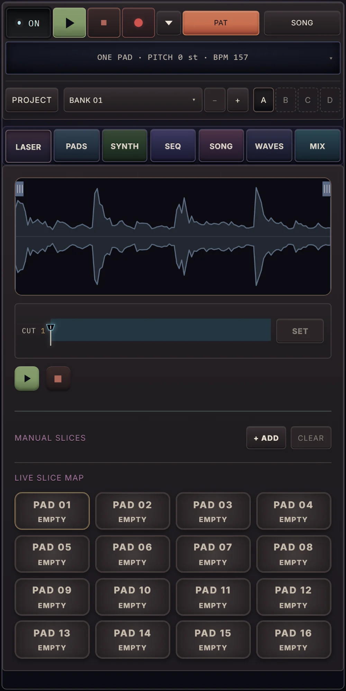
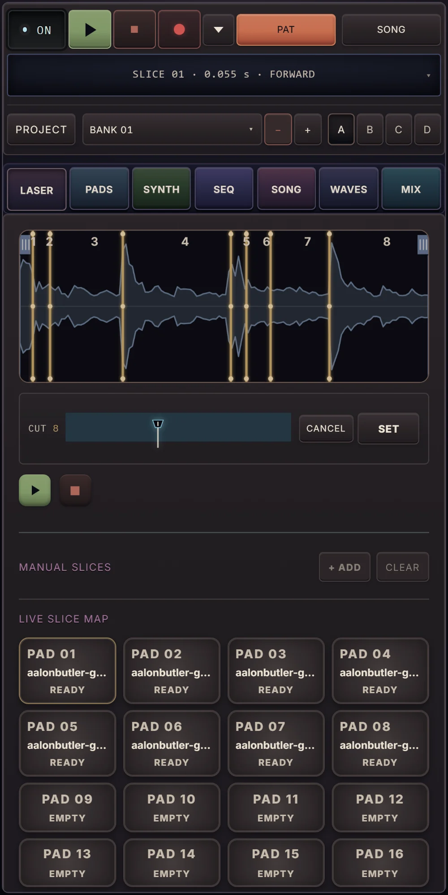
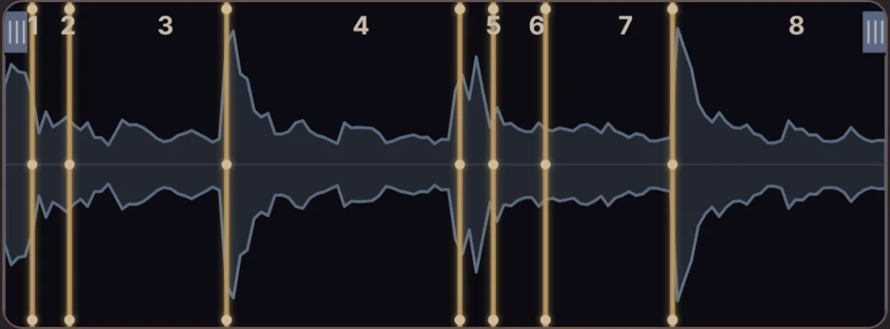
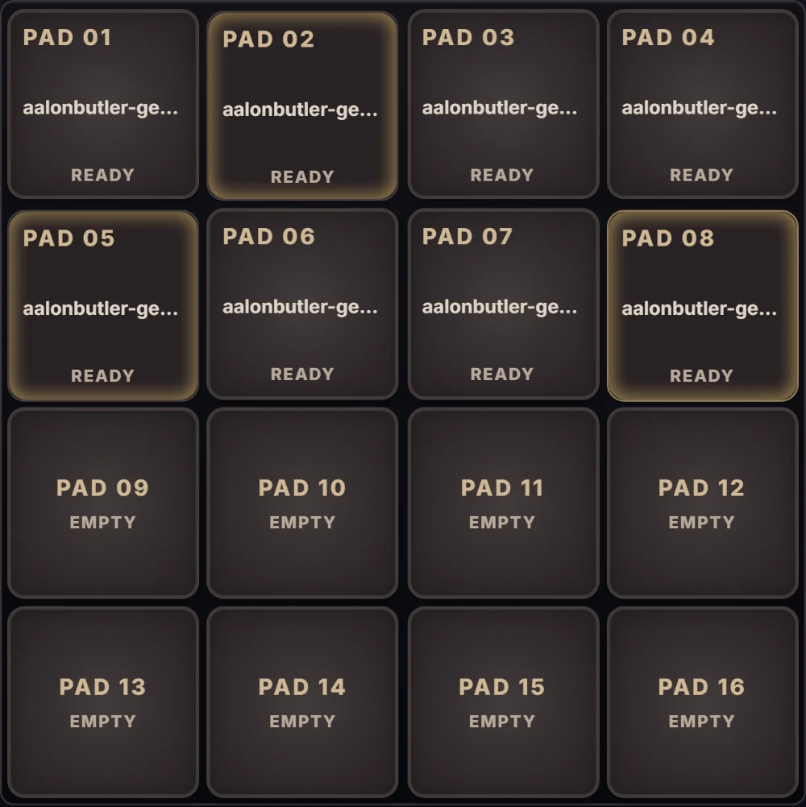
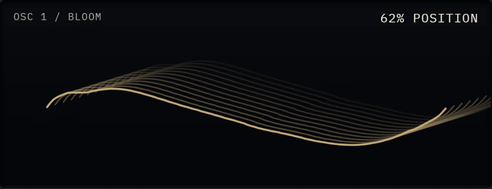
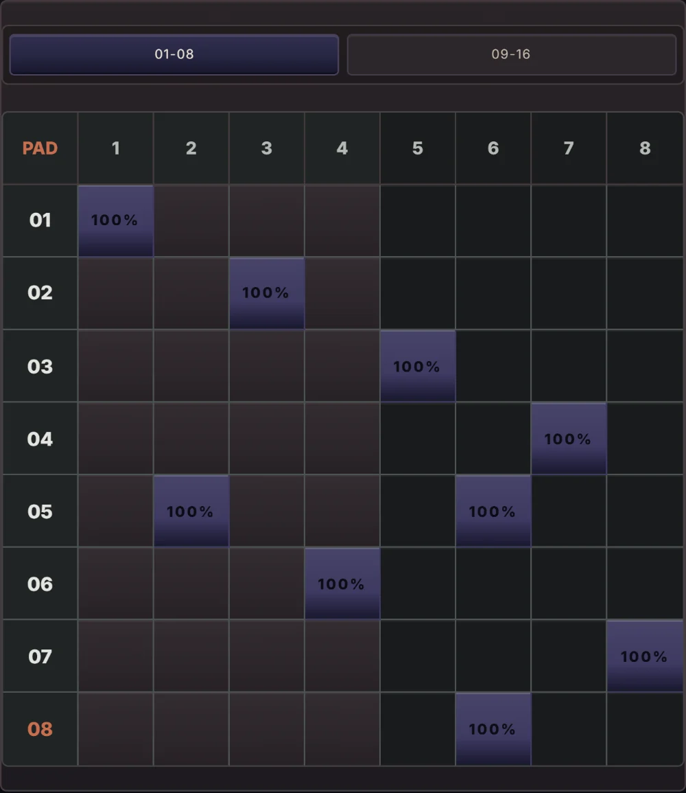
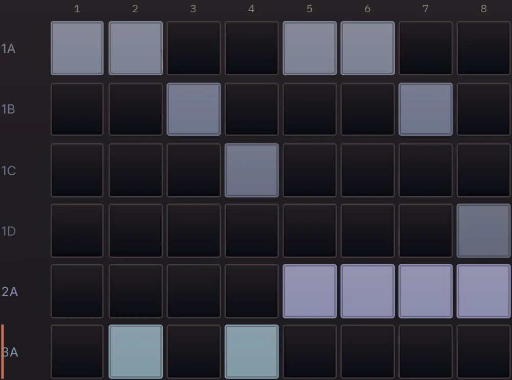
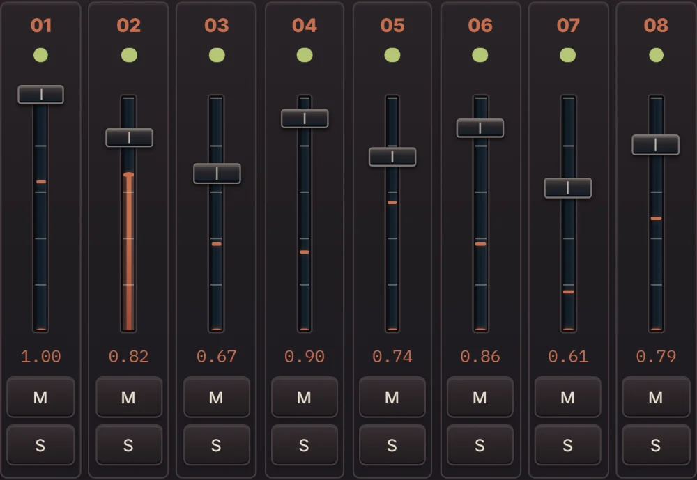

Station — a music workstation in a browser tab
Station is ready.


Reveal everything inside Station.
01
Laser
Sample manipulation
A break goes in whole. Set the cut and the pieces come out as eight slices, each one landing on a pad, ready to play out of order.
Waveform · eight cut markers

- Transient slicing
- Manual slice points
- Slices map to pads 01–08
Sixteen pads · three struck

02
Pads
Performance sampler
Sixteen pads, each holding a slice, a sample, or nothing yet. This is where cut material stops being a file and becomes something to play.
- Sixteen pads
- Ready or empty, per pad
- Fed by the live slice map
03
Zola-X
Poly synthesizer
Station's own polyphonic synth. The wavetable is the interface — the rest of the instrument waits behind five tabs instead of crowding it.
- Osc · Filter · Env · Mod · FX
- Two oscillators
- Wavetable position
- Unison
ZOLA-X · the wavetable screen

04 / 05
Seq / Song
Pattern and arrangement
Steps become a pattern; patterns become an arrangement. The same grid read at two scales of time, which is where separate parts turn into one piece.
- Eight lanes, 1/16 resolution
- Per-step velocity
- Pattern sections A–D
Step matrix

Arrangement · six lanes

06
Mix
Level and judgment
Eight channels and a master. Deciding what stays loud turns out to be a product decision as often as an audio one.
- Eight channels
- Live meters
- Solo and mute per channel
Eight channels · meters live
